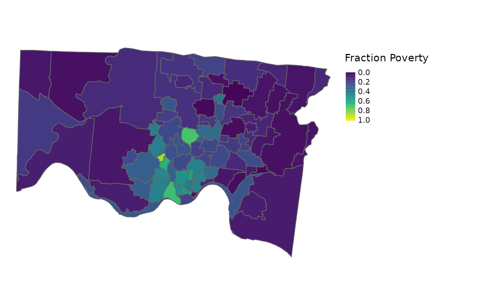

Spatial Interpolation
interpolate.RmdSpatial interpolation is the process of transforming data from one
spatial resolution to another. The cincy::interpolate
function uses census block group level weights to interpolate data from
one cincy geography to another cincy
geography. Variables prefixed with n_ will be interpolated
extensively (weighted sum), and all other numeric variables will be
interpolated intensively (weighted mean).
Here, we interpolate fraction_poverty from the 2018
American Community Survey from 2010 census tracts to 2010 ZCTAs.
Census Tract Fraction Poverty
library(cincy)
library(dplyr)
#>
#> Attaching package: 'dplyr'
#> The following objects are masked from 'package:stats':
#>
#> filter, lag
#> The following objects are masked from 'package:base':
#>
#> intersect, setdiff, setequal, union
library(sf)
#> Linking to GEOS 3.8.0, GDAL 3.0.4, PROJ 6.3.1; sf_use_s2() is TRUE
library(tmap)
d_tract <- st_transform(cincy::dep_index, 3735) |>
select(census_tract_id, fraction_poverty)
d_tract
#> Simple feature collection with 222 features and 2 fields
#> Geometry type: MULTIPOLYGON
#> Dimension: XY
#> Bounding box: xmin: 1310183 ymin: 377269.9 xmax: 1471300 ymax: 484981
#> Projected CRS: NAD83 / Ohio South (ftUS)
#> First 10 features:
#> census_tract_id fraction_poverty geometry
#> 1 39061024800 0.02395559 MULTIPOLYGON (((1432698 419...
#> 2 39061024901 0.23465704 MULTIPOLYGON (((1443219 419...
#> 3 39061025002 0.07681839 MULTIPOLYGON (((1430888 397...
#> 4 39061025104 0.03482587 MULTIPOLYGON (((1437087 385...
#> 5 39061025102 0.08560972 MULTIPOLYGON (((1453739 401...
#> 6 39061024902 0.01532070 MULTIPOLYGON (((1451413 408...
#> 7 39061025101 0.01003280 MULTIPOLYGON (((1454246 400...
#> 8 39061025001 0.14513478 MULTIPOLYGON (((1442738 396...
#> 9 39061008601 0.47115789 MULTIPOLYGON (((1382186 422...
#> 10 39061008800 0.57786282 MULTIPOLYGON (((1382492 422...Interpolating to ZCTA
The cincy::interpolate function allows the user to
choose from three sets of weights to be used for the weighted sums
and/or averages: block group population, block group number of homes,
and block group area.
Population Weights
d_zcta_pop <-
d_tract |>
cincy::interpolate(to = cincy::zcta_tigris_2010, weights = "pop") |>
st_transform(3735)
d_zcta_pop
#> Simple feature collection with 57 features and 2 fields
#> Geometry type: MULTIPOLYGON
#> Dimension: XY
#> Bounding box: xmin: 1310183 ymin: 377269.9 xmax: 1499039 ymax: 570030.7
#> Projected CRS: NAD83 / Ohio South (ftUS)
#> First 10 features:
#> zcta fraction_poverty geometry
#> 1 45212 0.21703724 MULTIPOLYGON (((1412333 423...
#> 2 45204 0.42233918 MULTIPOLYGON (((1383284 412...
#> 3 45233 0.07854548 MULTIPOLYGON (((1341573 418...
#> 4 45216 0.24193363 MULTIPOLYGON (((1408543 449...
#> 5 45232 0.58286395 MULTIPOLYGON (((1396026 434...
#> 6 45251 0.11984921 MULTIPOLYGON (((1366032 456...
#> 7 45248 0.07368119 MULTIPOLYGON (((1365090 427...
#> 8 45215 0.15255358 MULTIPOLYGON (((1409372 449...
#> 9 45237 0.22753371 MULTIPOLYGON (((1409601 432...
#> 10 45240 0.15150728 MULTIPOLYGON (((1388464 467...
Number of Homes Weights
d_zcta_homes <-
d_tract |>
cincy::interpolate(to = cincy::zcta_tigris_2010, weights = "homes") |>
st_transform(3735)Area Weights
d_zcta_area <-
d_tract |>
cincy::interpolate(to = cincy::zcta_tigris_2010, weights = "area") |>
st_transform(3735)Comparing Interpolated Fraction Poverty Using Different Weights
#> Loading required package: ggplot2
#> Registered S3 method overwritten by 'GGally':
#> method from
#> +.gg ggplot2
#> Warning: Removed 2 rows containing non-finite values (`stat_density()`).
#> Warning in ggally_statistic(data = data, mapping = mapping, na.rm = na.rm, :
#> Removed 2 rows containing missing values
#> Warning in ggally_statistic(data = data, mapping = mapping, na.rm = na.rm, :
#> Removed 2 rows containing missing values
#> Warning: Removed 2 rows containing missing values (`geom_point()`).
#> Warning: Removed 2 rows containing non-finite values (`stat_density()`).
#> Warning in ggally_statistic(data = data, mapping = mapping, na.rm = na.rm, :
#> Removed 2 rows containing missing values
#> Warning: Removed 2 rows containing missing values (`geom_point()`).
#> Removed 2 rows containing missing values (`geom_point()`).
#> Warning: Removed 1 rows containing non-finite values (`stat_density()`).